Astroneer game Steam link:
https://store.steampowered.com/app/361420/ASTRONEER/
Context of Astroneer as a Whole, as a Game Experience
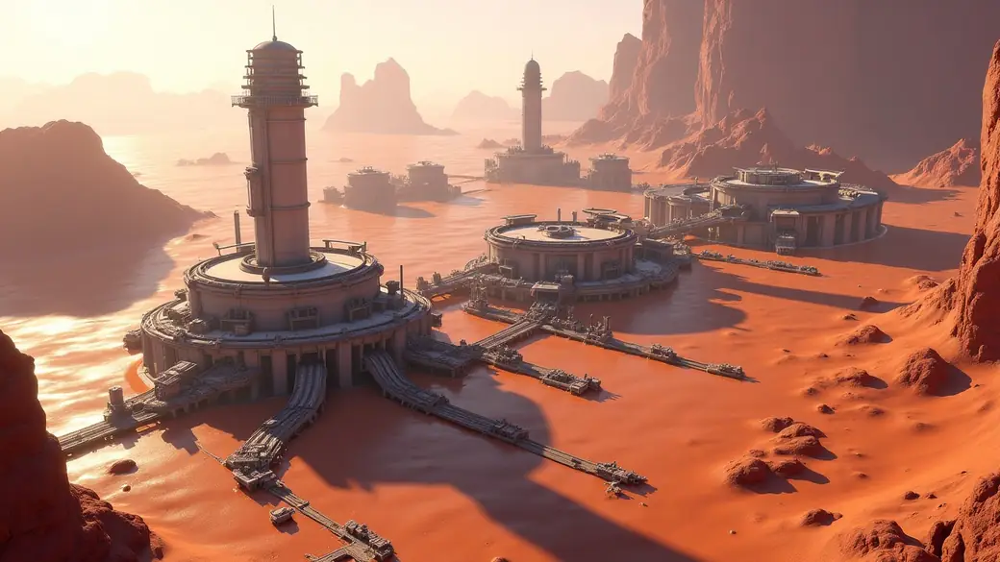
Vanilla Astroneer has 7 main planets/moons, along with a final central platform above the sun that serves as a teleport hub and game ending exit.
Players would normally start off from zero on the starter planet, unlock tech, gain resources, explore the randomized area and conquer each main planet by eventually reaching its core and completing all of its quests.
Players would set up relevant base infrastructure on each planet to acquire its resources and have the facilities to create anything they want to.
There's also the logistics gameplay of export and import of resources between planets, as well as partial automation of bases to create some products, even complicated ones, fairly automatically.
In a typical endgame scenario, a player will establish one or more megabases that can produce anything the player wants or needs at the press of a button. This also includes having a robust travel network between bases, outposts and streamlines logistics between planets.
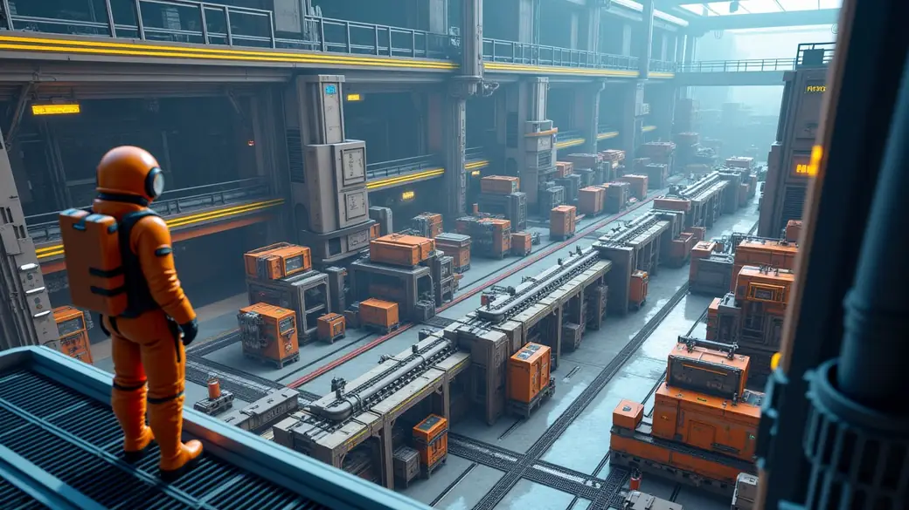
Beyond all this players will mostly focus on content exploration (how to use existing things in new ways or just testing out things that previously had no use), self-imposed challenge runs and maybe social activities like creating artworks and sharing them online or using Astroneer as a comfy space to hang out with friends.
Problems of Astroneer’s Metagame
The main problem is that the main driver for meaning in the game are the quests. They're currently finite and result in a total game reset of all player effort if the player wants to have quests again.
It's not that exciting to play Astroneer for its own mechanics to collect stuff and build bases/vanity since there's no official in-game outlet to channel any resources, production or vehicles that the player has amassed.
Sure, I can print out hundreds of medium rovers, wind turbines and hoard metric tons of various resources, but if I have no real reason to use them, then what's the point?
Furthermore, worlds on Astroneer lack natural laws of equivalent exchange nor have any recycling equilibrium of the world's ecosystem. By this I mean that whatever soil is removed is gone forever, along with any collectible resource nuggets found and collected.
The world cannot regenerate and with continued play will end up with every last bit of the world consumed until nothing is left. In the ultimate possible extreme endgame scenario, every planet will be reduced to paperthin roads and a megabase sitting on a thin floating piece of land with large banks of collected resources with no real use for them, while the rest of the planet has been stripped bare or anything that isn't indestructible.
As an experience it would feel like the heat-death of the universe, a bleak dead-end with no reason to continue. In fact, many players recognize this fate ahead of time and lose interest in playing the game, prompting some of them to work on the most epic way to suicide themselves as their last meaningful thing to do, usually by creating the biggest self-destruct explosion they can within reason. All the effort made for their save files essentially becomes worthless.
I think it's rather sad that the game funnels people towards this rather depressing endpoint. It doesn't have to do that; there is a better way.
Still, after that big ‘implicit self-destruct quest’ has been done and completed, the player may see no reason to play the game again and if they do, it is usually to do a challenge run with arbitrary restrictions, see how fast they can complete it or try something silly or novel in the hopes to milk out at least a little bit more value out of the game they’ve gotten so good at.
Those aforementioned extra things the player might do won’t be as rewarding as playing Astroneer for the first time, sadly. Player already knows what the surprises are and they already know what the ending will be, including the feeling of emptiness they get once they reach it.
At this point the game begins to feel more like a chore and becomes worse with each repeated playthrough. The player merely goes through the motions, often feeling a sense of suppressed annoyance that “ugh again they have to unlock or acquire something they already did in the past”, making the experience feel more irritating than fun.
Truth is, Astroneer’s moment-to-moment majority gameplay has always been pure busywork and fetch task at its core. The greatest positive moments in Astroneer are usually when your projects finally pay off in some cool way, like finally finishing setting up new infrastructure and seeing it benefit you or finally getting a large shuttle loaded up with a big bundle of products, ready to be delivered and unpacked on another planet. Things like that are the highlights of Astroneer gameplay that the player works hard towards.
The 8th planet proposal aims to overcome all these issues and make Astroneer into an infinitely playable game that feels meaningful to play past the completion of the final quest. It will also focus on delivering an endless supply of those satisfying and fulfilling moments that Astroneer is best at delivering through its gameplay systems.
The 8th Planet
So the player has conquered all 7 planets, activated all gateways and is now at the gateway hub above the sun, ready to activate its central feature.
Originally a small portal appears and the player's current character walks through it, vanishing to another dimension and then credits roll.
But then anticlimactically a new character is printed out and the player can continue to build and mine for no real official reason or just go trigger the ending again, essentially repeating this paragraph endlessly.
Instead of this outcome that signals the final end to the game, the central gateway hub is actually a celestial teleporter device that temporarily pulls an entire new planet/moon into the Astroneer solar system from randomly somewhere else in the galaxy/universe as a rotating randomized visitor.
Everything up until this point was only a warm up for the real game and there won’t be a final concluding ending in the game at all.
Instead the game will turn into an endless campaign generator that will keep the players existing achievements and infrastructure, incentivizing even further automation and usage of the game’s full selection of existing content and lets each new campaign play out with a definitive beginning and ending.
Read on further to get the details on how this will work.
Background Lore Told to Player
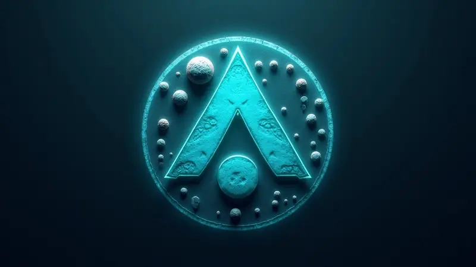
Lorewise the ancient Astroneers build this entire solar system that the game takes place in as a way to explore any celestial body by temporarily teleporting it into their own backyard, where they could land on it, research it, take samples and then leave. Once this temporarily displaced 8th planet was sufficiently explored and resolved, the gateway hub would be activated again to teleport that planet back to where it came from originally. Then, a new planet would be brought in, repeating this cycle of universe-exploration-in-your-backyard thing endlessly. This way logistics can be kept simple and there is no need for FTL travel to visit distant worlds to learn about them.
However then a calamity happened when a planet that they brought in had something dangerous on it and it ended up wiping out all EXO Dynamics bases, assets and all the Astroneers in the game's solar system. The gateway hub performed an emergency shut down and automatically returned the infected planet back to its original location.
The solar system was also completely reset, with every planet returning its landscape and terrain to a natural pristine untouched state, meanwhile any existing EXO Dynamics assets were often badly damaged beyond repair and thrown around like they'd been hit by a storm. Many things ended up buried deep underground like this or thrown across the surface all over.
The gateway hub sent a distress signal and this is where the player's mothership arrives into the solar system after a long voyage, starting the Astroneer game proper.
The Real Truth That Player Will Discover
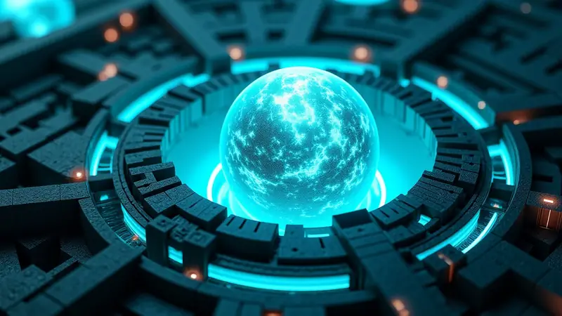
What really happened is that ancient EXO Dynamics Astroneers found special anomalous artifacts on the planets they pulled in to explore. These artifacts allow for resetting a region/quadrant of a planet to it's natural state. These are the Astroneer game universe's natural immune response for equilibrium deficiencies that undo effects of excessive planetary erosion that naturally happens over time.
The Astroneer universe isn't the same as the real world, so it operates under different rules of nature, having a vastly different ecosystem for how matter distributed throughout it's universe.
Naturally, planets and moons in Astroneers universe start off stable and then gradually erode with age (millions of years), slowly losing soil due to natural processes (ambient radiation, wind, light, flora, entropic decay, chemical reactions). Once a planets core becomes bare enough to not have enough soil around it, it creates a disposable "reset bomb" and detonates it, creating a dimensional storm that restores the terrain and resources back to the original state of that planet, sort of like a ‘local big bang’ that each natural celestial body in the Astroneer universe can do on its own.
EXO Dynamics found a supply of these natural "reset bombs" at the core of an older heavily eroded planet they were exploring at the time and brought it back to their own solar system for research on Sylva. They did ill-advised comically silly experiments on them that ultimately went horribly wrong, namely strapping many of those Reset Bombs together into a single Megabomb and accidentally detonating it.
This major screw up ended up engulfing the whole solar system with a powerful dimensional storm, resetting all 7 planets to their natural state while having all ancient staff vanish into a pocket dimension limbo somewhere unknown, with some staff possibly just dying in the chaos due to various hazards, hence why the player finds some abandoned backpacks out in the terrain sometimes.
8th Planet Metagame System
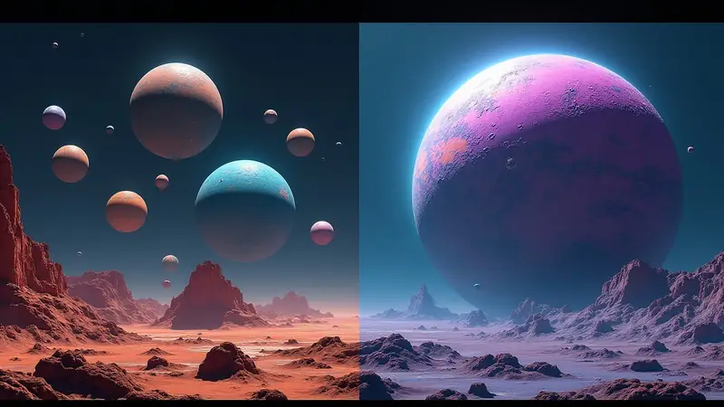
The way it works is that the gateway hub acts like a campaign generator where the original 7 planets stay the same, with all existing bases, resources and whatever else the player has built on them, but what is new is that a totally random, procedurally generated planet/moon is spawned somewhere in the solar system that matches it's profile.
So if a planet with a cold climate was spawned, it will be placed in the outskirts of the solar system, similar to Glacio's orbit. If it's a hotter planet, it's spawned to an orbit closer to the sun. The gateway hub ensures that no planets are on a collision course when an 8th planet is introduced.
The procedural generation chooses/creates terrain features, regions names, depth/size of planet, solar/wind power values, gravity strength, terrain colors, resource types available and other high-level planetary features.
Then, drawing from an existing pool of flora, decorations and props, procgen chooses random rules for how they are placed and distributed across each region/depth level of this disposable 8th planet.
The procgen also scatters natural research objects, EXO Dynamics remnant bases/research capsules/intact or broken assets/machines/wrecks from previous ancient expeditions. Same with anomalies and other special objects.
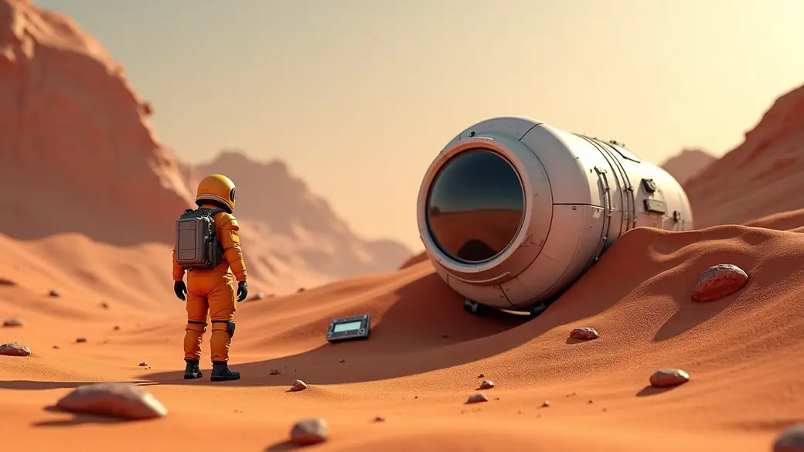
Unlike the other 7 planets, the 8th planet is not connected to the gateway hub system - therefore they do not have the gateway core nor the surface node teleporters. The only way to enter/exit the 8th planet is via space shuttles, plus maybe some extreme scenario failsafe if the player somehow manages to softlock themselves onto the planet with no way to craft and launch a shuttle to escape it.
They have a natural planetary core that houses dispensers/receptacles for reset bombs for each quadrant of the planet. The core itself is randomized in shape, color and conditions - so each planetary core of a randomized 8th planet is unique in some interesting way. Maybe it could be spherical fractals or just a simple round sphere as a core but with cool fractal pattern spokes/pillars that extend outward.
The experience of visiting each new 8th planet and its wild core would be quite exciting and apart from the core, it would use more or less the exact same methods that all the other planets already are using.
Note, those reset bomb receptacles may be empty if the planet is a younger type, as the core hasn't had the need to naturally generate one yet. They usually take hundreds of years to create a new one too, so players can only get a few reset bombs per planet. Overall, they are rare and limited.
Reset Bombs
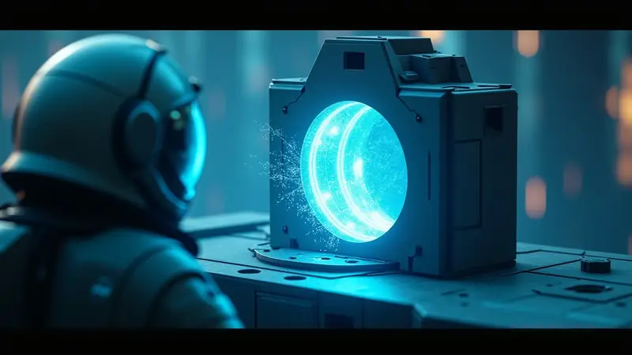
Reset Bombs is just a placeholder name, you can call them anything you want. Maybe they’re “dark matter accumulator singularities” or something. Up to you.
On their own, the player can't just detonate a reset bomb. They are just as inert as those large mushroom railway quest objects in Sylva’s underground that can be transported via train or large rover. Players must bring them to a special EXO Dynamics machine and spend research points/bits to convert them into usable devices.
These converted reset devices are similar to the appearance of an auto extractor and players can deploy them to any place they wish to reset on one of their original 7 planets, restoring removed soil, randomizing new terrain, seeding new resource deposits native to that planet. In essence, it's like selectively deleting save-file data for that specific large area of the planet and rerolling it with a new seed.
The area of effect of the reset device is huge, ranging anywhere from 1/8th or 1/16th of the planet's volume. The player will get a detailed readout of the affected area and a warning of what will be lost/reset if the device is activated in that specific location.
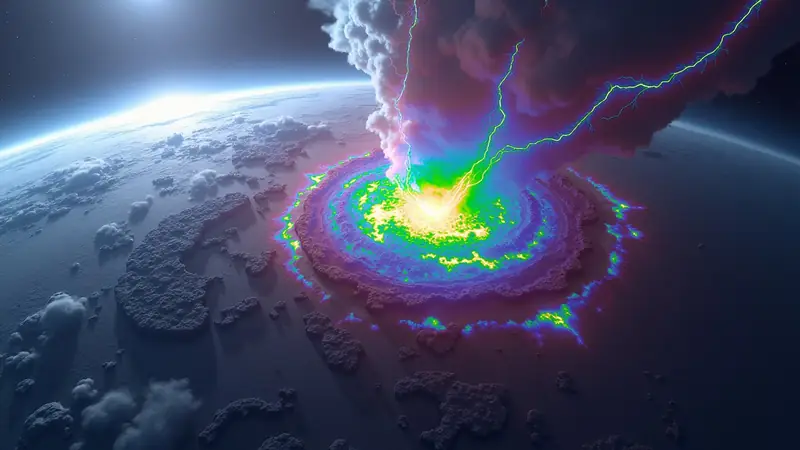
Once a player is satisfied with the placement of the reset device, they can activate it and then evacuate the area of effect as a countdown begins. Once it reaches zero a gradually growing powerful dimensional storm will envelop the targeted area and then suddenly erase/regenerate it to a pristine but randomized state as if it was taken straight out of a newly generated save file. The reset device is consumed in the process too. Being caught in the storm will either kill the player or push them away with great force.
The hidden practical idea of the reset device is actually a countermeasure for mitigating save file bloat by allowing players to delete unwanted and fully exploited terrain that no longer serves any purpose and has nothing to give anymore. Players can replace it with fresh new terrain, with some randomization and maybe a few extra surprises from the 8th planet thrown into the mix so that re-exploring the 7 original planets becomes interesting again.
Said surprises could be anomalies, special resource caches that are extra rich or unusual for that planet (astronium deposit on surface, anomalous tungsten microbiome or Sylva, graphite in unusual places, etc.) or other interesting Easter eggs that are pulled from a rare pool of premade artworks/messages for players to read/listen/see. There is a lot of cool potential here.
In essence, players would dedicate one or more planetary quadrants of the original 7 astroneer planets for their permanent base of operations, while the other ones are regeneratable/disposable sectors intended as a renewable source of soil, resource deposits and anomalous finds that each reset storm may bring there.
It's worth noting that the player cannot replicate the megabomb disaster that happened in the ancient lore by any means other than manually deleting their save file.
General Infinite Metagame Flow of the 8th Planet
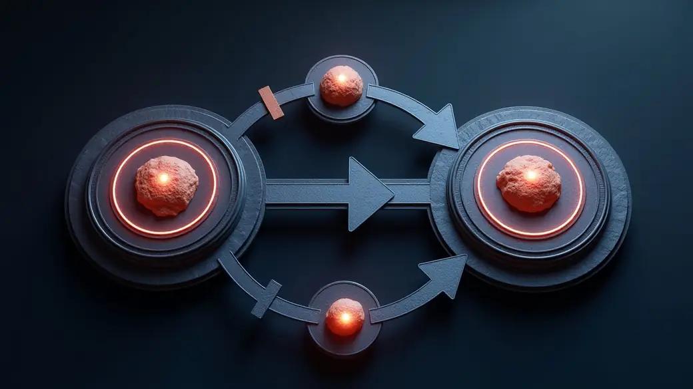
The 8th planet is "disposable" from the player's point of view. Anything built and left there will be gone forever, along with the 8th planet itself once the generated campaign for this particular 8th planet is finished.
This content becomes available after activating the space satellite, so the player still has to do the “final” 7 keys quest to activate this metagame system.
The metagame format for the 8th planet is the following:
- Gateway hub spawns a randomly generated 8th planet.
- The 8th planet has a set of randomized campaign mission quests that task the player to use their resources, vehicles and factories on the original 7 planets to overcome the challenges presented on that particular 8th planet's campaign.
- Player gets useful or interesting rewards for completing these quests.
- Players can freely gather resources and other finds and haul them back to their original 7 planets as they wish for safe keep/processing.
- Once satisfied with their time on this particular 8th planet, players can optionally pack up and evacuate any of their equipment/vehicles they found or built there or bring back any valuable stuff they brought from the original 7 planets, like a large rover or auto extractor, etc. Or they can just leave them there.
- At the gateway hub, if all quests related to that 8th planet are done, the player can choose to “retire” that 8th planet, forever losing access to it.
- The gateway hub gives an intermission screen with stats for that campaign and offers an exit point for the convenience of the player to remind them to also go back to the real world, allowing them to save and exit or save and continue with newly generated campaign, which will then generate and warp in a whole new 8th planet with its own unique campaign.
- Player can thus both keep having activities on the original 7 planets that assist with the 8th planet campaigns, and the new 8th planets resupply and renew the original 7 planets with new resources, or reset devices, making infinite quest driven gameplay possible.
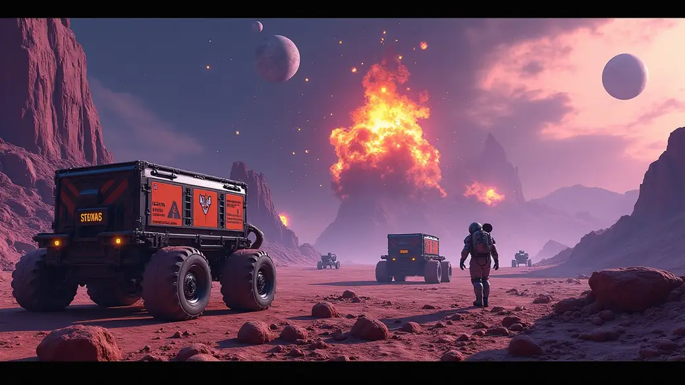
Player will pull a new random planet from the galaxy, do missions there, create outposts that are facilitated by the factories back at home on the original 7 planets and then send away that 8th planet back to its origin, deleting it and all of its contents from memory.
This intentional metagame format keeps a soft cap on the save file size, so the game remains sustainable no matter if the player has explored through hundreds if not thousands of randomized 8th planet instances or extensively explored the original 7 planets by giving the option to safely partially reset parts of the planet directly in-game without ever needing a completely new save file.
Quests For 8th Planet Campaigns
The idea is to create fun scenarios to apply the different skills and resources the player has acquired throughout the game on the original 7 planets. This assumes players will have the option to land on the 8th planet with a large shuttle that is loaded with rovers, platforms, machines and other auxiliary supplies and systems. And do multiple back and forth trips with even more item transfers too!
Meanwhile each 8th planet will still always have the usual compound-resin-etc-laterite present onsite, along with a randomized set of secondary metals and gasses that are possible to harvest. Like the original 7 planets, there's also wrecks and caches that players can repurpose and salvage. Players can always escape the 8th planet by building a new shuttle if the original entry craft was destroyed by accident. Plenty of laterite and ammonia is always available on the 8th planet to facilitate this.
For each 8th planet a set of 2-5 major missions are placed on the planet. These quests may involve:
- moving something from location A to location B.
- blowing something up.
- cleaning up wreckage for salvage by shredders.
- finding something by using probe scanners.
- digging something out of the soil so it becomes free.
- feeding something a certain resource to open it.
- feeding something a certain amount of power.
- investigating a signal in a difficult location tracked via compass.
- performing an action at an anomaly to stabilize it.
- rescuing dimensionally trapped ancient Astroneers.
- handling hazardous materials and disposing them.
- finding X hostile flora and weeding them out.
- use trains to transport those boxes to a specific point.
- help someone else set up an EXO outpost by connecting platforms and installing machines within a specific location. (You can steal their stuff and replace it with other alternatives as long as you meet the requirements, so it's possible to swap things around.)
- and anything else you can come up with. Simple job-like tasks.
The missions can appear in any region, any depth level, with any severity - some being easy and some harder. But all more or less fun to complete.
The purpose is to finally give a true outlet to use all those goods produced at player megabases and have them solve various challenges using Astroneers most fun mechanics of bringing in giant vehicles, using galastropod powers, setting up outposts, using machines, and using various consumables like dynamite to their full effect.
Context Of 8th Planet Quests
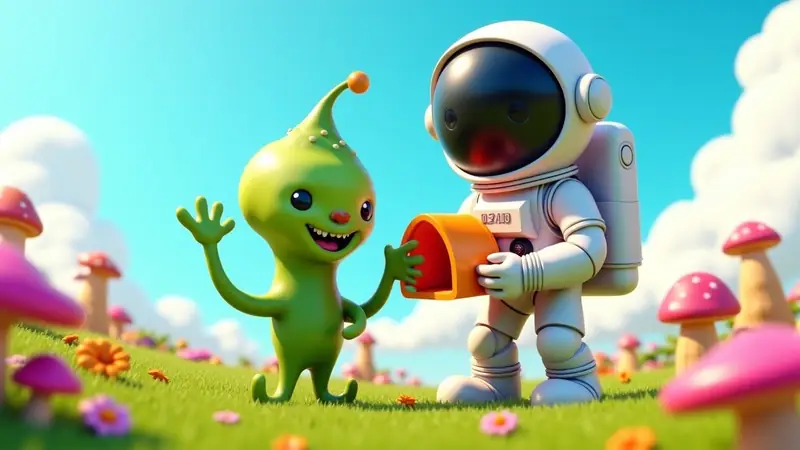
In terms of context that drives these procedurally generated quests, it can either of these:
- Natural imbalance in the planet's ecosystem that need to be corrected.
- Dimensional space-time anomaly causing a disturbance that needs to be cleaned up.
- Misplaced alien belongings that need recovery and be promptly returned to their owner.
- Local native aliens need some good ol’ Bob The Builder help from you.
- Run a postal service and deliver mail between aliens, helping bring them together.
- Investigate strange artifacts or caches that contain an interesting educational message.
- Another EXO Dynamics mistake gone wrong that needs fixing.
(Bonus) Neumann Probes Adversary Idea
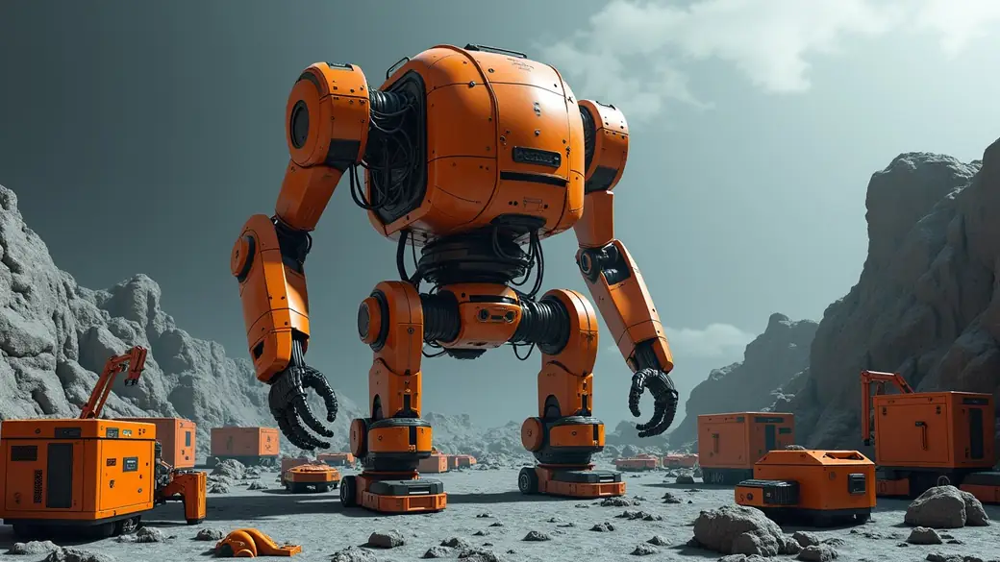
For the last one in particular, ancient EXO Dynamics may have experimented with a Von Neumann probe - a self replicating AI driven spaceship/robot that travels planet to planet and uses local resources to multiply itself and create factories in its wake. This probe malfunctioned and created a mess all over the galaxy on random planets that the player now has to fix.
These Neumann probes could be sort of a non-hostile antagonist that the player has to go and shut down on some of the 8th planet campaign, though not all of them. They may present environmental hazards to the player, but don't actively fight the player or even recognize them. They're just toasters gone out of control that need scrapping, thus maintaining the chill vibe family friendly nature of the game but still having some minor combat-esque things to do.
Campaign Generator
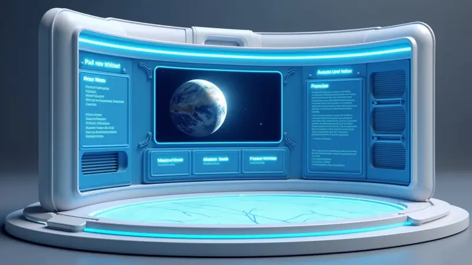
After generating the 8th planet, the gateway hub will analyse the planet and generate a few main missions that are relevant to that planet's conditions. These main quests are mandatory to complete.
Optionally the hub also generates an optional side quest or two that players can do for extra rewards and other bonuses/benefits.
There are essentially a pool of quest templates the mission generator draws from and stitches them to the planet with a randomized operation name, stuff like “Desert Storm”, “Operation D.R.I.V.E.”, “Blue Shovels”, and other silly names to give each campaign some element of supposed narrative character and endearment factor.
It will spawn the relevant quest objects from the relevant pool of quest objects and place them on the 8th planet, while placing markers on the player's compass/UI to let them know where they are. I imagine this could be easily achieved with existing technology of the current game’s frameworks.
Once generated, the gateway hub will lock itself and keep the current 8th planet existing until all of its main quests are done. Only once a player completes and dismisses the current 8th planet can they spawn a new 8th planet in its place.
Rewards Gained From 8th Planet Campaigns/Quests
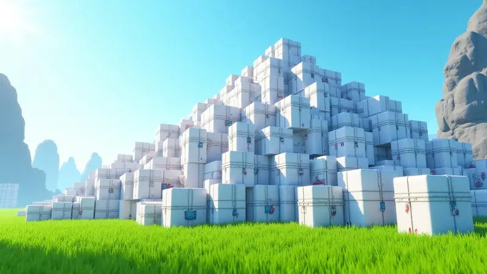
Players can receive bundles of a resource, be it scrap, astronium, metals or gasses, usually delivered via landing pad in a resource canister or an unpacked storage unit.
They can also receive bundles of explosives or refined elements.
They can also get rovers, machines and supplies that could be used as disposable goods for the next 8th planet campaigns.
Besides physical rewards, players can be rewarded with interesting information, like quotes from scientist/engineers, bits of trivia about space, cool tips, life hacks, space memes or anything else that you, as the developer/creative person, could easily mass produce and build an enormous collection of that kind of content the player could enjoy and discover.
Each game update could expand this collection of rewards. Text is lightweight and if you keep images/audio clips small enough, you can keep cramming tons of content without the game ever becoming too large to download/update for the average player.
(Bonus) Player In-Game Photos As Campaign Rewards
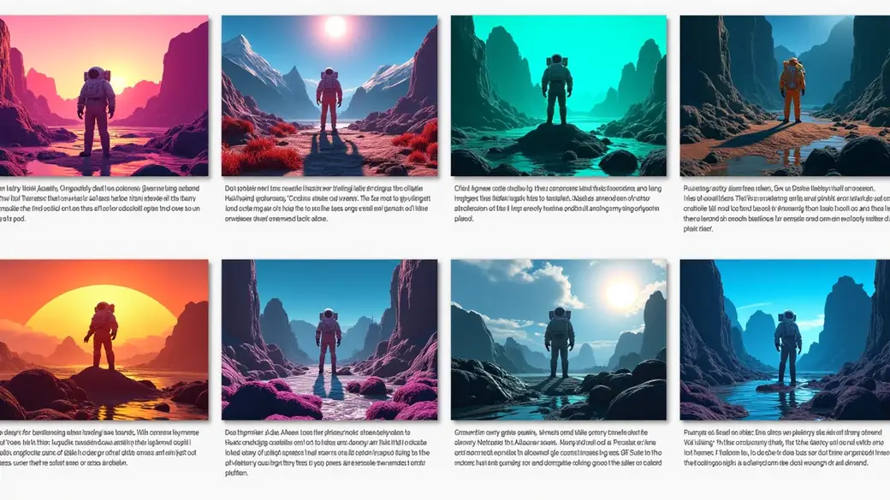
Another fun optional idea to make things even more interesting, is to add an aspect of asymmetric multiplayer generated rewards.
Players can take photos using the in-game camera and submit them with a text caption as they complete 8th planet campaigns.
The picture would be uploaded to a System Era server into a collection, that would then randomly send one of them to another player’s intermission screen that they could see during the intermission screen, with the text caption, when they too completed another 8th Planet session. This could be a simple and fun social thing where players can sense a common connection with others that play astroneer too.
To keep things sensible, players would only have a few slots for their uploaded images so that they're encouraged to keep only the best of the best, only replacing them if they're even better than the current selection. Kind of like choosing what wallpaper to have on your PC. Similar idea.
Players would also be guided to be mindful of how to caption their photos, so the community is steered in a positive direction that cheers others, creates a sense of connection and celebrates achievements.
It would also be a great place to show off character looks, though that would require an even deeper and free-er character customization options for it to matter.
(Bonus) In-Game Lore Entries
Another optional idea is that players can encounter data objects that reveal what happened in the past as described by this document, but also gain fragments that unlock the usage of the reset device and the knowledge to extract reset bombs from older-type 8th planet cores.
The entries will both allude to the disaster that reset the Astroneer solar system - aka the improper use of the reset bombs/device - but also contain data on the correct usage of the reset bomb/device. The information the ancestors left effectively saves the player from making the same mistake while also teaching them how the partial planetary reset mechanic works.
This is sort of the narrative presentation and tutorial side of this expansion, if you will.
Feasibility Assessment of Implementing The 8th Planet
Keep in mind most of the ideas in the document try their best to adapt to Astroneers existing content, systems and sensibilities. I am deliberately avoiding suggesting any kind of major overhauls that change any of the existing core mechanics, game content nor game progression. Achieving the 8th planet metagame system within the Astroneer current framework should be doable and compatible with minimal changes to old parts of the game, at least in regards to the game’s core systems and content. It's just adding on top of it.
The only real difference is the old ending being replaced/removed entirely in favor of changing the role of the gateway hub, converting it to a celestial teleporter to bring planets into the solar system temporarily instead of being an ascension portal for personnel to reach a higher dimension.
Lorewise I never considered Astroneer to be a simulation. As a player I always thought that everything that happened in the game was the actual real ingame world. I think the 8th Planet Metagame can be weaved into the existing Astroneer Training Program simulation narrative, but that’s beyond the scope of this document. I’m mainly suggesting the mechanics of an infinite metagame system here. Retconning is always an option too, just saying.
Anyway, the main challenges in implementing the 8th Planet Metagame would be these:
- Procedural generator heuristics algorithm for creating unique planets.
- Another procedural generator for creating the campaigns that gives said planets a set of quests to drive and reward player activity.
- Creating the necessary framework for templates/objects that would be added to relevant content pools for these two generators to draw their building blocks from.
Content-wise the system could reuse, recolor and reshuffle all existing flora/decorations/props/terrain, needing no additional planetary content to make the endless 8th planets a reality, with the exception of the cores and reset bombs/devices, of course. It would be a matter of making a context aware algorithm to have sensible rules for placing objects and choosing terrain features that make sense based on the planet type and its composition.
In simple coding terms the thing I’m calling a “Procedural Generator Heuristics Algorithm” is just an IF ELSE tree with rand(1, 9) function sprinkled around, choosing a value between a preset range with a seed value influencing the rolls. That’s all it really is.
First level heuristics:
- Big or small planet?
- Hot or cold? (How far is it spawned from sun, effectiveness of solar panels influenced)
- Dense or hollow planet? (affects gravity of planet and terrain features)
- Does planet have atmosphere or not and how dense is it (affects wind power effectiveness)
- Teeming with life or not? (Abundance of flora.)
- Clustered or scattered resources? (bigger treasure troves far between or are resources more uniformly peppered everywhere in small quantities that you’ll bump into them anywhere.)
- Rich or poor resources? (to counter poor planets being unfun, have more anomalies, wrecks and artifacts appear on them if resource deposits are otherwise scarce and also low yielding.)
- Is the planet exotic or mundane (how basic or crazy can the planet be? Crazy means more high tier metals/gasses, more options to use extreme terrain than usual, more unusual combinations that wouldn't happen on a mundane planet like how to spawn and place certain props, etc. This step can be split into separate different steps that result in all kinds of cool combinations.)
- Hostile or tame planet? (presense of hazards? Affects hostile flora, weather, day night cycle, rough/smooth terrain features? Multiplies luck modifier for higher-tier goodies to spawn if more dangerous planet.)
The above questions will then narrow down what kind of decisions will the procgen heuristics make in the second level heuristics.
- If planet is cold enough then limit flora presense on surface by that factor.
- If planet has low gravity then reduce atmosphere density by a factor of half.
- If planet is highly exotic then extend the range of rand(1, 9) for this and that part, making it more likely for it to create a crazier result.
- If planet is rich in resources, make terrain colors be more saturated and vivid.
Eventually these and similar questions will define the entirety of the randomly generated 8th planet, making it fully formed and appropriately populated in a way that makes logical sense or be believable, generally.
The third step of heuristics will then narrow down the options for quest types and how they will appear on this planet, based on the previous steps with an aim to avoid creating awful quests that would be annoying or awkward to complete or be out of place/make no sense.
Like 'move/drag something large from A to B' over a long distance would suck on a planet with very rough terrain. So the heuristics would ensure the distance is shorter on such worlds if it chooses to roll for this quest type, and so on.
Expansion Possibilities For Future Content
The 8th planet procedural generator uses pools of interchangeable content that it draws from when building a planet and its many features/details/biomes/sub biomes.
Any newly added smartly tagged new props, new organic flora, new decorations, new terrain textures and such will exponentially multiply the range of possible permutations for each generated 8th planet. Even a single new rock, tree or flower can increase the amount of unique combinations by thousands or more.
New templates for quests, new generic modular quest objects and new insertable lore entries will expand upon the variety of quest combos that can happen on each new 8th planet.
New hazards, new terrain color palettes, new natural planetary core fractal generation algorithms, new terrain algorithms, new decorations placement algorithms, new hostile flora types, new wreck placement configurations can also further expand the generator's ability to make more divergent 8th planets, making each of them unique in a meaningfully distinct way.
New physical reward bundles, new non-physical quest rewards, new lore entries to find within the 8th planet or reset bomb’d original 7 planets quadrants can make each completed quest and exploration even more exciting and fun to keep doing.
Sustainability of Loot in Long Term Gameplay in the Infinite Metagame
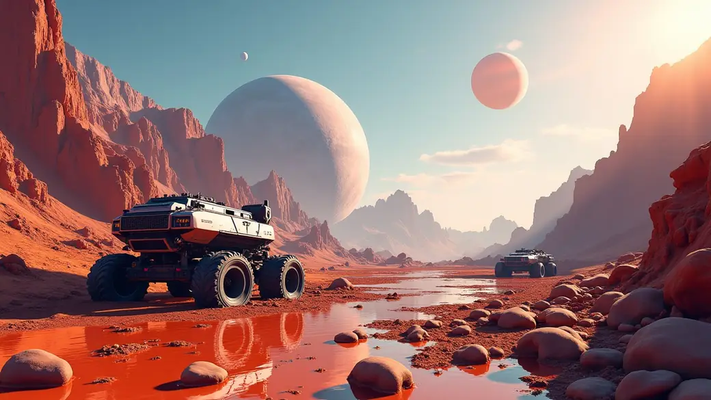
At some point player will have more than enough of what they need, which will prompt the player to be more reckless with their gains and willingly use them as disposable items that are left on 8th planets rather than packing them up each time to reuse, which will cause a natural reduction of active game objects when there is no need to keep hoarding stuff. Players will learn to keep only what matters and let go of anything excessive.
This is a positive thing as players will be more focused on just intrinsically enjoying doing more 8th planet campaigns over and over for the sake of adventure than having the game be about the loot they keep getting.
Players get to do the fun things in Astroneer like drive a big rover and blow stuff up with dynamite more often, which is awesome in itself. The 8th planet quests will keep providing official meaningful direction and new surprising environments to apply these fun tools endlessly.
Also the issue of research points being useless during endgame is solved by having an endless outlet for them via reset devices. Players can use research bits in the process to convert reset bombs into reset devices, as an example. Research points could also be used as “payment” during some quest objectives.
Misc Extra Quality of Life Suggestions
Player Inventory Purge Command
A button combo to eject/drop/purge all player inventory slots at once. Annoying core issue in Astroneer is having to pick up and move stuff one by one. Having a button or some trigger that is easy to do but not easy enough to accidentally trigger would be great.
This feature would require a small sub feature of playing being able to “toggle favorite” on chosen slots by hovering the cursor over player slots when they're empty to change their color from red to blue, which indicates that this slot will not participate in the purge command, allowing the player to keep something always while having the other slots still be able to purge.
Toggle Hide Techs In Research Screen
Allow players to hide/disable unlocked research technologies. Why? Well because as the game progresses every printer becomes cluttered with items that are rarely needed but the player still has to cycle/scroll past them anytime they want something printed. This wastes time and is annoying and constant.
In most of my playthroughs I actually strategically avoid unlocking many techs to keep each printer as clutter free as possible. In the research menu it would be awesome to have the ability to press the same button again on already researched techs to turn them yellow, indicating that they won't show up in the printer even though they are unlocked. Pressing the button again will make them blue again, so the player can toggle between blue and yellow. Note, if any existing printers are already cycled to an item that the player disabled, then they will still be on that item until the player switches the recipe to another one and thus making it not show up on the printer again until re-enabled back to blue state. This ensures any existing automated factories are not affected by this tech hide/disable feature.
This quality of life feature applies to both player backpack printer and any sized printer.
Monetization for the Company Itself
The current business model leans on people buying the base game, the dlc and then maybe some cosmetic items. It's not bad, but it lacks giving people, specifically the existing invested players, an avenue to support you long term, sustainably, for the continued unspoken/unseen work behind the scenes that ultimately makes the actual releases and patches a reality anyway.
Personally, I would suggest opening a patreon account or create a similar setup to give people the optional added ability to pay for the continued development of Astroneer and its future expanded content.
The only rewards you’d need for patreon would be:
- Posts that show behind the scenes work and musings once a month.
- Maybe an occasional poll that people can vote on where all options are chosen by System Era (maybe what kind of cosmetic should be added next from XYZ list, etc.).
- Maybe have the in-house artist post WIP sketches or finished custom art.
- Maybe access to a download folder archive with early art for the game.
- (Free tier) same game/company update posts that you post on Steam.
Contact
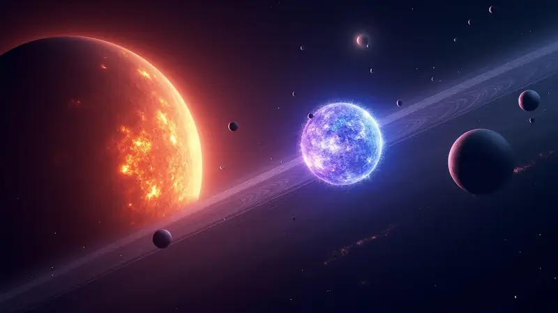
That’s all for now. If you’d like to ask questions or clarifications on any of the above ideas, you can always email me at:
Again, all ideas and images presented in the document are free range, public domain, no license, no credit needed. Just make the game even cooler, that’s all I wish for. I’m a game designer so this was fun for me to brainstorm.
Talk about it
Questions, disagreements and ideas of your own are all welcome. Discuss this article with other readers on the Reactorcore Games Discord, follow new articles and dev news on Patreon, or write to me directly.